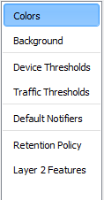
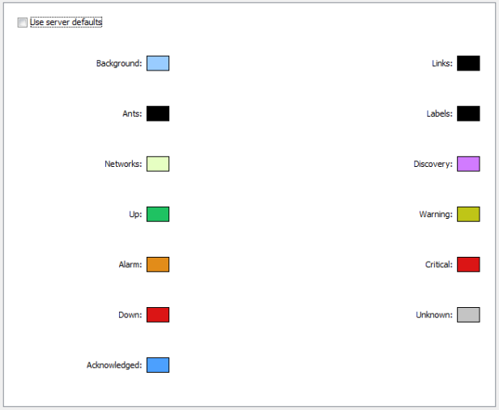
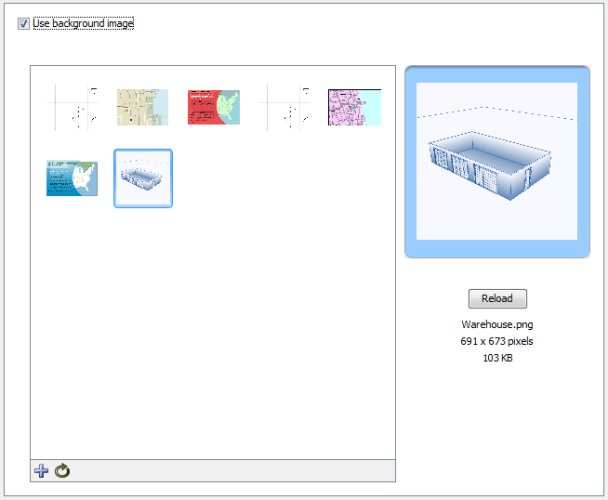
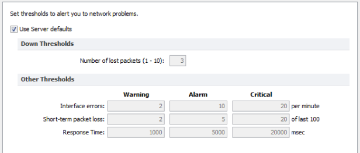
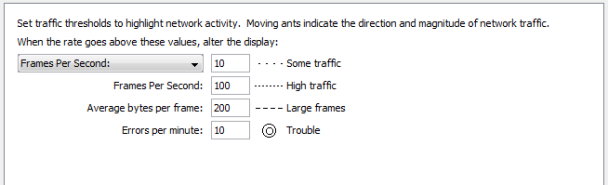
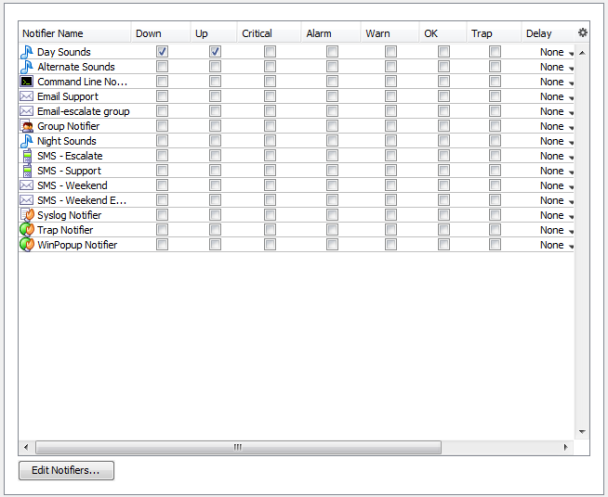
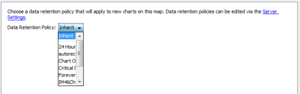
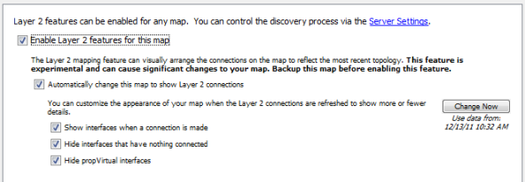

Left pane of the
Map Settings Window
Use the Map Settings window to specify colors for the map, to specify a background image, and to specify default thresholds and notifiers. Any changes you make are saved with the map, and do not affect any other maps.
To view the Map Settings Window:

The Colors pane of the Map Settings Window
To view and edit the colors for the current map:
From the Appearance section of the Map Settings window, choose Colors... The current colors for the map appear.
InterMapper has a default color scheme that is controlled by the default map colors window. This color scheme applies to all new maps, and to those maps for which the Use server defaults box is checked.
For an explanation of each color you can change, see Colors you can change{}, which explains the meaning of each default color.
To use a set of colors different from the global color scheme:
To restore the current map to the default color settings:

Background Image pane of the Map Settings Window
You can define a background image for any map. The background image appears behind the map contents - the devices, icons, and links on the map.
You might use a background image containing a floor plan of an office, and move the items on the map to show the locations of each device in the office. You might use an image containing street map of a city or topographic map of a county or state.
For more information, see Background Images.

The Device pane of the Map Settings Window
InterMapper can provide warnings or alerts when interface errors, packet loss, or round-trip times get too high. You can set default thresholds for all of these metrics from the Map Settings window.

The Traffic pane of the Map Settings Window
InterMapper provides indicators for network traffic. You can specify the levels at which the different indicators are shown on links.
For each available metric, enter the value required to display the specified traffic indicator:

The Default Notifiers pane of the Map Settings Window
Use the Map Settings window to specify the notifiers you want to attach to new devices in this map by default.
To specify the default notifiers for the current map:
To edit the available notifiers:
If you are using InterMapper Database to collect device and network data, you can specify a default retention policy for a map. This setting overrides any default policy set in the Server Settings window.
Use the Map Settings window to specify the Retention Policy you want to use with new devices in this map. Data Retention Policies are defined from the Retention Policy pane{} of the Server Settings window.
Use the Retention Policy panel to choose the retention policy to be applied to new devices added to the map.

Use the Layer 2 Settings panel to turn on Layer 2 features for a map and to choose how Layer 2 connections should appear.
Notes:
